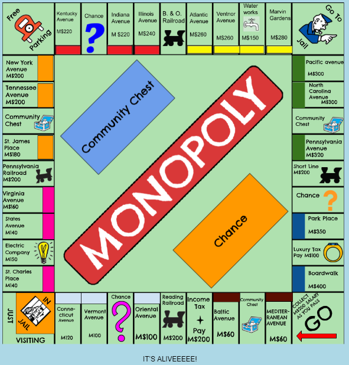
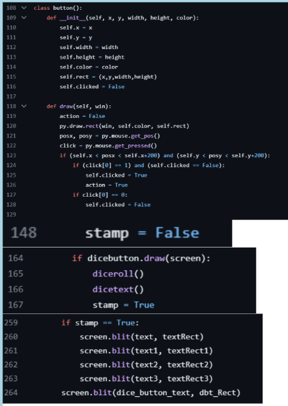
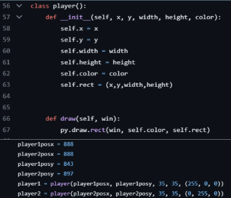

To start off the project, after we came up with a list of things we wanted/needed in the game, we used Turtle in Python to create the game board. This is the final piece of code we used in this stage of the project:

By using for loops, we were able to make the task of drawing the lines less tedious. In order to add some of the more finer details, like the logo and the card locations, we searched up how to “rotate” shapes. Because of the limitations of Turtle, many of these objects had to be created outside of the code before being added in. This is seen from lines 96 - 102. The final product looked like this:

Unfortunately, we realized that it would be impossible to add in the mechanics of the game without using pygame. This was especially problematic because we couldn’t find any way to connect turtle and pygame together. Because of this, we had to remake the code for the board again, this time in pygame. This is the code we used for that:

As can be seen, we created the board by having the code generate multiple rectangles at different points. We still used for loops since they helped automate the process. Starting from line 42, we reused the objects we created for the turtle version since we couldn’t figure out how to efficiently make the logo and card locations using pygame. After this, we took a screenshot of the resulting board and used Google Drawings to add the names of different locations on the board. This is the final product:
After putting our creation into the code(and drastically shortening the amount of lines required for the project), we set our sights on the mechanical parts of the project. The first thing we did was come up with a dice roll system. We used python to code two random number generators, which would come up with a number between 1 and 6. Then, it would add these numbers together, coming up with the final amount of spaces that a player would be allowed to move on their turn. Here is the code:

After experimenting with the import feature to put this piece of code into the main file, we decided to just copy-paste it in. Its efficiency may be questionable, but the result is the same.
Next, we created a button that, when pressed, would roll the dice one time, giving the amount of spaces that the player could move in their turn. We created this button by creating a rectangle to the side of the board. After this, we found out the coordinates of this rectangle and set the code to run the dice roller if the mouse clicked in this general area. This is the code that runs this part:
The next thing we worked on was the most challenging part of this project by far. We created a movement system where an object representing the player would move for a certain amount of turns, decided by the dice roll code. First, we created the player objects:
Next came the hard part. We decided to put the movement system code into the dice roll code to make everything flow smoothly


As can be seen, the code for this part was very… long. This is especially visible for the code made for player 2. This is because of how the players were placed. Player 1, being on the inside, would only have to cross each position one time to get to the next position. Player 2 was located on the outside. This meant that the Player 2 would take multiple turns to get across the corners. In order to fix this issue, we had to manually create custom scenarios for player 2’s movement. After throwing in a bunch of random numbers(the theoretical ones weren’t working for some reason), we seemed to land on a set of numbers that seem to work for now. As of now, the movement code is extremely inefficient(and takes up a lot of space; we may need to move that to a separate file), but it is working. Here is a video of the working version as of now: